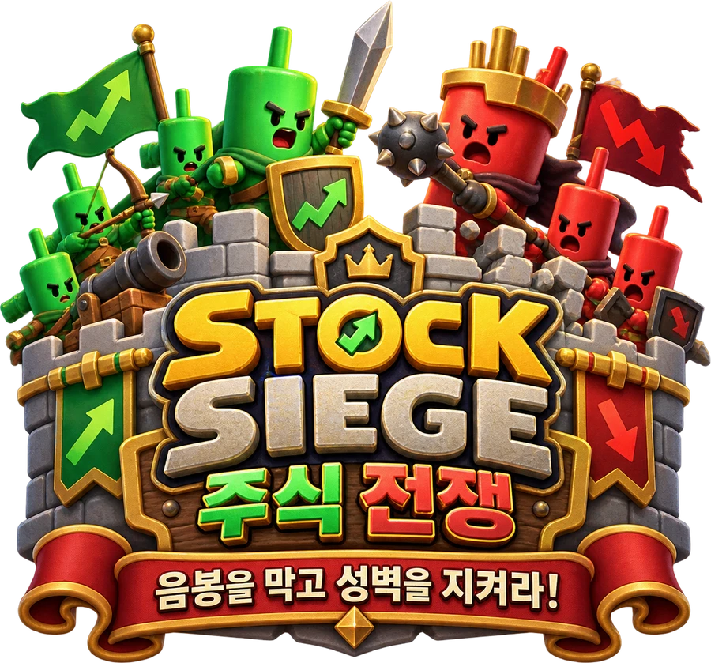

클레이 전장을 준비하고 있어요.
0 / 36Yahoo 1분봉은 API 키 없이 시작합니다.
타워 카드
보유 자금 $1,600
설치 1/2 · 유저 Lv.3에 슬롯 +1
SOXL 가격·거래량
Yahoo 실제 1분봉 · 5초마다 확인
가격 수신 대기
직전 완료 봉의 실제 거래량과 가격 움직임으로 매수·매도 비중을 추정합니다. 실제 매수·매도 체결 구분이 아닙니다.
완료 분봉 수신 대기
무료 데이터 계정 연결
- Alpaca에서 Paper Trading 계정을 선택합니다.
- 대시보드 오른쪽 API Keys → Generate New Keys를 누릅니다.
- 생성된 Key ID와 Secret Key를 아래에 입력합니다.
이 연결은 이 브라우저에만 적용됩니다. 다른 이용자에게 자동 공유되지 않습니다.
Alpaca 무료 계정의 Paper API 키를 준비해 주세요. 실제 투자계좌 개설은 필요하지 않습니다. 이 게임은 시세·거래량만 읽습니다.
Alpaca 대시보드 열기 ↗보유 타워로 교체
보관 중인 다른 타워가 없습니다. 상점에서 구매하면 여기서 교체할 수 있습니다.
전장 설정
라이브 가격·총거래량은 실제 데이터입니다. 매수·매도 구분은 선택한 공급 방식에 따라 추정합니다.
아래 기능은 가상 데이터로 디자인과 동작을 검수합니다.
각 1% 구간을 0.65초씩 이동합니다. +45%로 위치 제한도 확인하세요.
시장을 관전하는 전장
붉은 음봉은 북쪽에서 성벽을 공격하고, 양봉은 남쪽에서 장벽 경험치를 더합니다. 기본 모드는 09:30~09:31의 완료 1분봉을 09:31~09:32에 나눠 재생합니다. 봉의 고가·저가·몸통·이동폭으로 양봉과 음봉 비중을 추정하며 실제 체결 구분은 아닙니다. AI·반도체 종목은 반도체 친구들, 일반 종목은 녹색 양봉이 등장합니다.
캐논을 구매해 설치하세요. 짧게 누르면 보유 타워로 교체하고, 끌어서 이동하거나 다른 타워와 자리를 바꿀 수 있습니다.
상점 카드 아래 금액을 눌러 최대 Lv.40까지 즉시 강화하세요. 기관총 Lv.1과 $1,600으로 시작하며, 음봉 처치로 유저 레벨과 설치 한도가 늘어납니다.
주가가 1% 구간을 넘으면 성벽이 움직입니다. 깔린 유닛은 보상이나 회복 없이 사라집니다.
양봉은 장벽 XP를 올리고 음봉은 XP를 깎습니다. 특정 XP 구간마다 장벽 레벨과 화력이 달라지며, Lv.1에서도 전투는 계속됩니다. 장벽 Lv.8 MAX에서 양봉이 닿으면 XP 대신 골드를 받습니다.
장이 쉬는 날에는 첫 화면의 정복 코스로 입장하세요. 폭락·상승·반등을 체험하는 10–30분짜리 가상 코스 20개가 순서대로 열립니다. 전투 보상은 같은 라이브 전투의 20%이고, 최초 정복 보너스는 한 번만 지급합니다. 코스에서 구매·강화한 타워는 연습용이며 정산 경험치와 골드만 기존 캐릭터에 합산됩니다.
시세·거래량 관전 게임 · 실제 주문/계좌 기능 없음
전투 결과는 가격 생성에 영향을 주지 않습니다.
보유 타워·유저 XP·장벽 XP·자금·설정은 이 브라우저에 자동 저장됩니다.